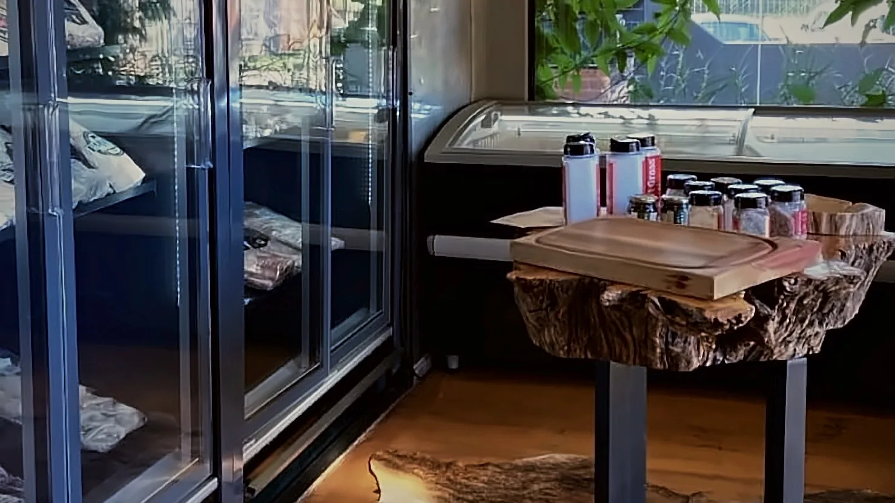
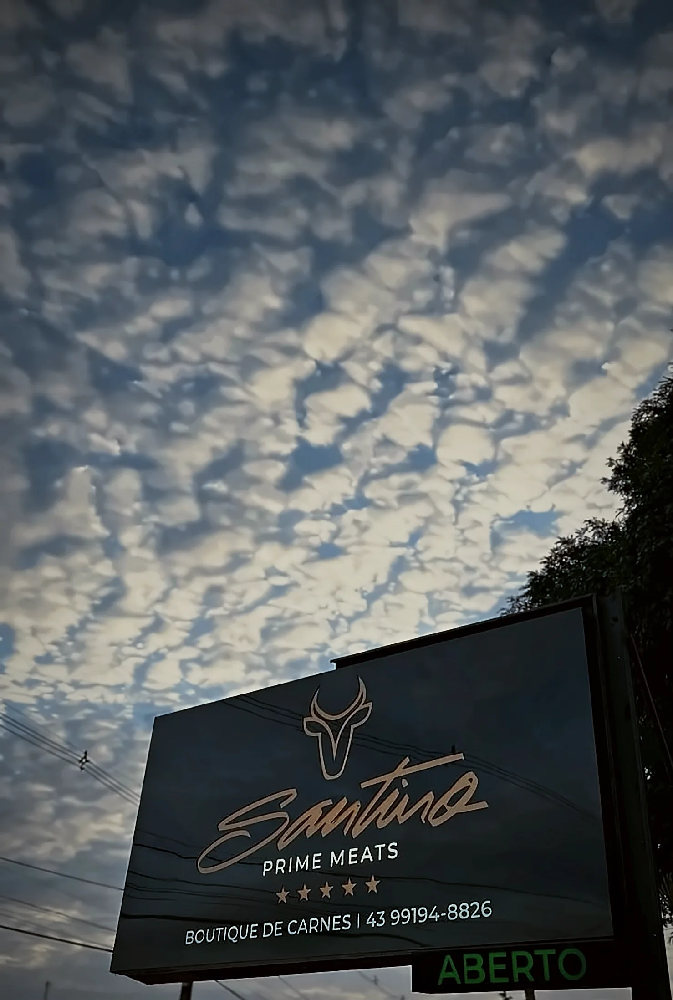
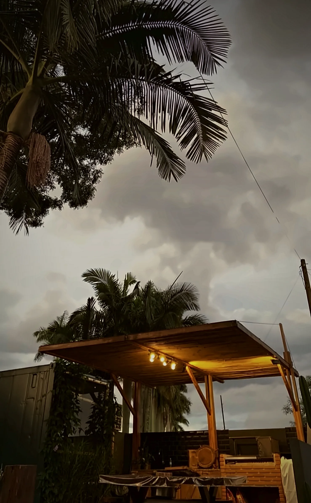
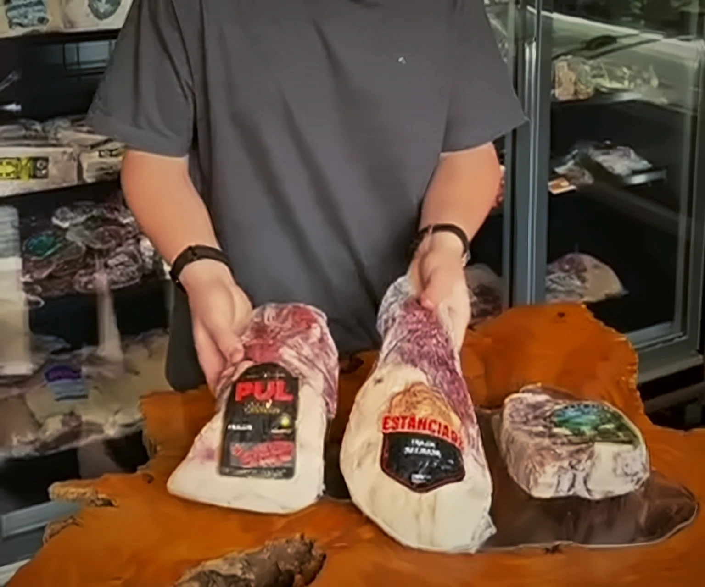

Cortes Prime
As estrelas da churrasqueira, com marmoreio e maciez para impressionar.
- Picanha
- Ancho
- Chorizo
- Prime Rib

Boutique de carnes em Londrina. Cortes selecionados, preparo de açougueiro e atendimento de quem entende de churrasco.


A Santino Prime Meats nasceu para quem leva o churrasco a sério. Aqui você encontra carnes com procedência, cortes feitos na hora e uma equipe pronta para indicar a peça ideal para a sua ocasião, do almoço de domingo ao evento especial.
Venha conhecer a nossa boutique em Londrina e descubra o que faz a diferença entre uma carne comum e uma carne prime.
Uma seleção para todos os estilos de churrasco e cozinha. A disponibilidade muda ao longo da semana.

Procurando um corte específico? Pergunte o que chegou hoje.
Consultar disponibilidadePeça com antecedência e retire tudo pronto na boutique.
Mande uma mensagem no WhatsApp ou ligue para (43) 99194-8826.
Diga a ocasião e o número de pessoas. Ajudamos a montar o pedido ideal.
Rua Alcides Turini, 400, em Londrina. Tudo separado e porcionado.
Acompanhe no Instagram as chegadas da semana, promoções e dicas de preparo.
@santinoprimemeats